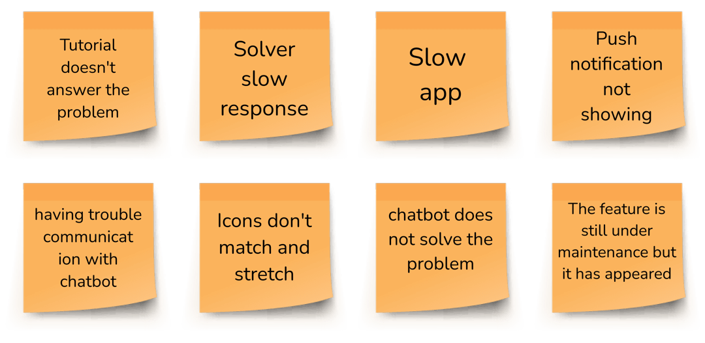
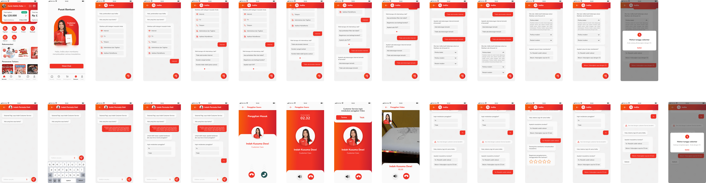

Case Study
Service Complaint myIndihome
myIndiHome app is a digital platform that provides various features that aim to make it easier for customers to manage IndiHome services.
This app includes services for the Indihome subscription, OTT video streaming activation, subscribe to additional features, reporting disturbances, checking and paying bills, checking myIndiHome points, usage info, and other interesting services.
Design thinking is a non-linear, iterative process that teams use to understand users, challenge assumptions, redefine problems and create innovative solutions to prototype and test. Involving five phases—Empathize, Define, Ideate, Prototype and Test—it is most useful to tackle problems that are ill-defined or unknown.
We should gain an empathetic understanding of the problem we’re trying to solve, through user research. Empathy is crucial to a human-centered design process such as design thinking because it allows you to set aside your own assumptions about the world and gain real insight into users and their needs.

It’s time to accumulate the information gathered during the Empathize stage. Then analyze your observations and synthesize them to define the core problems you and your team have identified.
We gain an empathetic understanding of the problem we’re trying to solve, through user research.
Empathy is crucial to a human-centered design process such as design thinking because it allows you to set aside your own assumptions about the world and gain real insight into users and their needs.
This is an experimental phase. The aim is to identify the best possible solution for each problem found. We should produce some inexpensive, scaled-down versions of the product (or specific features found within the product) to investigate the ideas generated.
Two-dimensional illustration of a page's interface that specifically focuses on space allocation and prioritization of content, functionalities available, and intended behaviors
Visual way of representing a product. While a wireframe mostly represents a product's structure, a mockup shows how the product is going to look like.
Evaluators rigorously test the prototypes. Although this is the final phase, design thinking is iterative: Teams often use the results to redefine one or more further problems. So, we can return to previous stages to make further iterations, alterations and refinements – to find or rule out alternative solutions.

Design Thinking work processes help us systematically extract, teach, learn and apply human-centered techniques to solve problems in a creative and innovative way—in our designs, businesses, countries and lives. And that’s what makes it so special.
 © 2022
© 2022